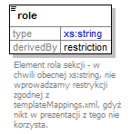

| diagram |  | |||||||||||||||||||||||||||||||||
| namespace | http://epodreczniki.pl/ | |||||||||||||||||||||||||||||||||
| type | restriction of xs:string | |||||||||||||||||||||||||||||||||
| properties |
|
|||||||||||||||||||||||||||||||||
| used by |
|
|||||||||||||||||||||||||||||||||
| facets |
|
|||||||||||||||||||||||||||||||||
| annotation |
|
|||||||||||||||||||||||||||||||||
| source | <xs:element name="role"> <xs:annotation> <xs:documentation>Element rola sekcji - w chwili obecnej xs:string, nie wprowadzamy restrykcji zgodnej z templateMappings.xml, gdyż nikt w prezentacji z tego nie korzysta.</xs:documentation> </xs:annotation> <xs:simpleType> <xs:restriction base="xs:string"> <xs:enumeration value="JPOL_E3_E4_Konteksty"> <xs:annotation> <xs:appinfo> <xopus:documentation> <xopus:name xml:lang="en">Konteksty</xopus:name> <xopus:name xml:lang="pl">Konteksty</xopus:name> </xopus:documentation> </xs:appinfo> </xs:annotation> </xs:enumeration> <xs:enumeration value="JPOL_E3_E4_Tekstykultury"> <xs:annotation> <xs:appinfo> <xopus:documentation> <xopus:name xml:lang="en">Teksty kultury</xopus:name> <xopus:name xml:lang="pl">Teksty kultury</xopus:name> </xopus:documentation> </xs:appinfo> </xs:annotation> </xs:enumeration> <xs:enumeration value="JPOL_E3_E4_Preteksty"> <xs:annotation> <xs:appinfo> <xopus:documentation> <xopus:name xml:lang="en">Preteksty</xopus:name> <xopus:name xml:lang="pl">Preteksty</xopus:name> </xopus:documentation> </xs:appinfo> </xs:annotation> </xs:enumeration> <xs:enumeration value="JPOL_E3_E4_Gramatyka"> <xs:annotation> <xs:appinfo> <xopus:documentation> <xopus:name xml:lang="en">Gramatyka</xopus:name> <xopus:name xml:lang="pl">Gramatyka</xopus:name> </xopus:documentation> </xs:appinfo> </xs:annotation> </xs:enumeration> <xs:enumeration value="JPOL_E3_E4_Komunikacjaizycie"> <xs:annotation> <xs:appinfo> <xopus:documentation> <xopus:name xml:lang="en">Komunikacja i życie</xopus:name> <xopus:name xml:lang="pl">Komunikacja i życie</xopus:name> </xopus:documentation> </xs:appinfo> </xs:annotation> </xs:enumeration> <xs:enumeration value="JPOL_E3_E4_Zadaniowo"> <xs:annotation> <xs:appinfo> <xopus:documentation> <xopus:name xml:lang="en">Exercises</xopus:name> <xopus:name xml:lang="pl">Zadaniowo</xopus:name> </xopus:documentation> </xs:appinfo> </xs:annotation> </xs:enumeration> </xs:restriction> </xs:simpleType> </xs:element> |